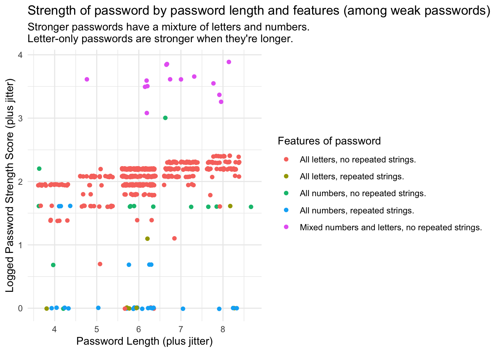
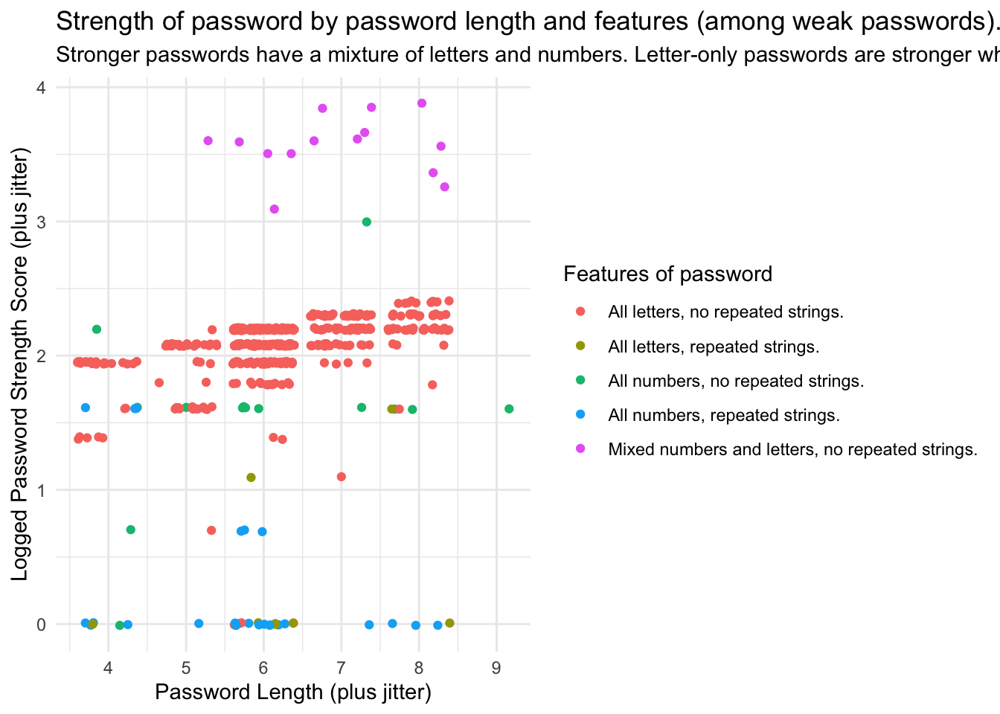
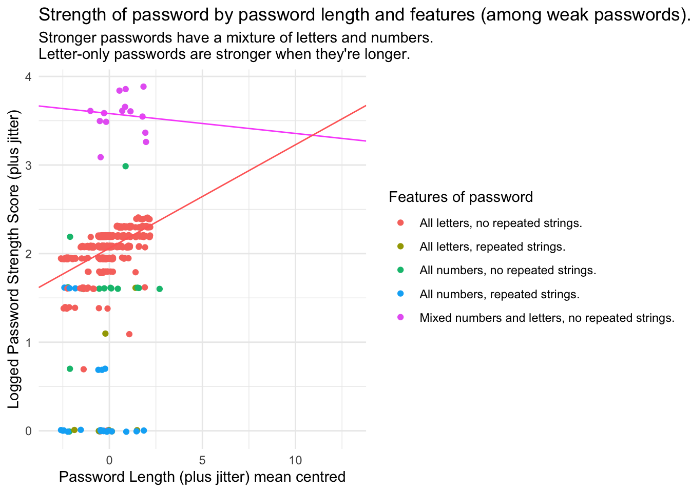

Calum Webb
Sociologist.
Tidy Tuesday (14/01/2020): If you're going to use only letters for your password make it a long one.

This is my first attempt at a Tidy Tuesday. I’ve been following the Tidy Tuesday initiative since it started, but still never got around to doing one, so this is an attempt to remedy that. The tidy tuesday for this week (14/01/2020) was about passwords, using data about the most common passwords that have appeared in multiple data breaches. These were collated in a dataset by Information is Beautiful.
I liked the idea of this one as an opportunity to use regular expressions and the str_detect() function of stringr to extract some information on simple features of the common passwords, creating dummy variables for the following frequent occurances among the weakest of the weak passwords:
- Passwords that use only letters
- Passwords that use only numbers
- Passwords that use repeated patterns (e.g. “asdfasdf”)
As well as more standard things like password length. The aim of my approach to this Tidy Tuesday dataset was to do the following:
- Create some new variables based on features identified in the common passwords using regex
- Visualise the relationship between password strength and these variables to come up with some hypotheses
- Test these hypotheses using a simple multiple regression model
Identifying password features
I start off by reading the data from the tidy tuesday repository. Then, using mutate() we create a few additional dummy variables that identify whether the password meets the criteria set by the regular expressions. For example, in the first variable we set the value to 1 if the password contains only numbers, in the second if it contains only letters, and so on. For the purpose of visualising the data I also create a pw_feat variable that contains all of the unique combinations of the three features I created dummy variables for.
Lastly, I filter out the NA rows that have crept into the data.
library(tidyverse)
passwords <- read_csv('https://raw.githubusercontent.com/rfordatascience/tidytuesday/master/data/2020/2020-01-14/passwords.csv')
passwords <- passwords %>% mutate(
# Does password contain only numbers?
all_num = ifelse(str_detect(password, "^[0-9]*$"), 1, 0),
# Does password contain only letters?
all_let = ifelse(str_detect(password, "^[a-zA-Z]*$"), 1, 0),
# Does password contain repeated strings?
rep_str = ifelse(str_detect(password, "\\b(\\S+?)\\1\\S*\\b"), 1, 0),
# length of password
pw_len = str_length(password),
# Combined flags in categorical variable
pw_feat = paste0(ifelse(all_num == 1, "All numbers, ", ""),
ifelse(all_let == 1, "All letters, ", ""),
ifelse(all_num == 0 & all_let == 0, "Mixed numbers and letters, ", ""),
ifelse(rep_str == 1, "repeated strings.", "no repeated strings.")
)
) %>% filter(!is.na(password))Visualising password features and relative strength
Next, I want to visualise the data so I can come up with some hypotheses about what might contribute to better password strength (especially since I don’t have much knowledge about cybersecurity to draw on). Using ggplot we can start by creating a scatterplot of the log of the password strength (plus one) on the y axis and the password length on the x axis. I add some jitter to both to give a sense of the number of passwords that are in that length range, as there is not a huge amount of variation.
The reason I use the log of the password strength score is because the strength scores of the common passwords are heavily right skewed, with a number of passwords that score over 30 but a majority that are between the 0 and 10 range. Because the log of 0 is undefined, we also need to add a constant of 1 to the strength score so that our logged strength score doesn’t end up returning a bunch of undefined results that end up removed. This is a necessary transformation for the regression model we plan to do later.
passwords %>% ggplot() +
geom_point(
aes(x = jitter(pw_len, 2), y = jitter(log(strength + 1), 2), col = pw_feat)
) +
xlab("Password Length (plus jitter)") +
ylab("Logged Password Strength Score (plus jitter)") +
labs(col = "Features of password") +
ggtitle("Strength of password by password length and features (among weak passwords).",
subtitle = "Stronger passwords have a mixture of letters and numbers. Letter-only passwords are stronger when they're longer.") +
theme_minimal()
We can pick up quite a few things clearly from this visualisation. Namely that the strongest of the weak passwords seem to be disproportionately from the ‘Mixed numbers and letters, no repeated strings’ feature category (in pink). The ‘all letters, no repeated strings’ category of passwords seems to do a little better than the others. On average, the weakest of the most common passwords seem to be the ones that use all numbers with repeated strings (for example, 111111).
What’s also pretty interesting is that the length of the password only seems to have a clear positive relationship with the strength of the password for passwords that are all letters. ‘platinum’ is, for instance, rated higher than ‘apple’. For passwords that are just numbers, or ones that are a mixture of the two, password length doesn’t seem to matter too much (although in these common passwords from data breaches we only have passwords as long as 9 character; not exactly the Fort Knox of internet security. A more complete dataset would probably yield different results).
From this, we can come up with the following hypotheses to test with a regression model:
- Passwords that contain only numbers or letters will be weaker than passwords that contain a mixture of both letters and numbers
- Passwords with repeated strings will be weaker than passwords without repeated strings
- The effect of password length will be stronger for passwords that use only letters
A simple regression model for predicting password strength among common passwords
Those familiar with regression models will know that the inclusion of dummy variables in a model means that one category must be excluded, becoming the reference group that is captured by the constant. In this case, we have the following independent variables: all_num, all_let, rep_str, and pw_len. Our reference category, in this instance, would be passwords that contain a mixture of both numbers and letters with no repeated strings. Without any futher transformation the constant would also refer to a password of length zero, which doesn’t really make much sense, so we should probably centre that to the average password length of 6.2 characters. This is easily done within the model using the scale() function.
pw_model <- lm(data = passwords,
formula = log(strength + 1) ~ all_num + all_let * scale(pw_len, scale = FALSE) + rep_str)
summary(pw_model)##
## Call:
## lm(formula = log(strength + 1) ~ all_num + all_let * scale(pw_len,
## scale = FALSE) + rep_str, data = passwords)
##
## Residuals:
## Min 1Q Median 3Q Max
## -2.03737 -0.09146 0.04207 0.15889 1.82205
##
## Coefficients:
## Estimate Std. Error t value Pr(>|t|)
## (Intercept) 3.58165 0.08751 40.927 < 2e-16 ***
## all_num -1.86509 0.11493 -16.228 < 2e-16 ***
## all_let -1.52068 0.08878 -17.129 < 2e-16 ***
## scale(pw_len, scale = FALSE) -0.02250 0.03383 -0.665 0.506416
## rep_str -1.46370 0.07713 -18.977 < 2e-16 ***
## all_let:scale(pw_len, scale = FALSE) 0.13932 0.03696 3.769 0.000183 ***
## ---
## Signif. codes: 0 '***' 0.001 '**' 0.01 '*' 0.05 '.' 0.1 ' ' 1
##
## Residual standard error: 0.3168 on 494 degrees of freedom
## Multiple R-squared: 0.7345, Adjusted R-squared: 0.7318
## F-statistic: 273.3 on 5 and 494 DF, p-value: < 2.2e-16So, our model seems to do a fairly good job at explaining why some of those common passwords are relatively weaker than others. Let’s break our results down in the way that we’d usually do in regression:
Model fit
We have an adjusted R-squared value of 0.7318, suggesting that we’re explaining about 73 per cent of the variation in password strength scores using these four variables and the interaction term. This isn’t bad considering that our variables were just snippets of information we could easily extract from the password strings using regular expressions. In general, our model is pretty good at estimating password strength using just password length, whether the password is just numeric, just alphabetical, and whether there are any repeated strings.
Significance of independent variables
These are not really a random sample of passwords, so I’m not sure we can put much stock in anything that our tests of statistical significance tell us. It would be better off looking directly at the estimates to see how our score changes.
How password features can help explain password strength scores
Remember that the intercept refers to the expected value of log(password strength + 1) when all of our independent variables are equal to zero. For a password that was a mixture of numbers and letters, with an average length of around 6 characters and no repeated strings we would expect the logged value of password strength plus one to be around 3.58. As we saw on our graph earlier, this would be a pretty good score, towards the top of our group of common passwords.
For passwords that are all numbers we would expect this score to drop by around 1.865, if it also had repeated strings of numbers we would expect it to drop by a further 1.464, making it pretty much as bad as it can be. For a password that is just letters we would expect a fall of around 1.52.
However, we can see that the length of the password is also important when the password is all letters. An increase of one character in the length of a password that is all letters is associated with an increase of 0.117 (0.13932 + -0.02250) in the logged password strength score. If this increase continued linearly outside of our data range (which it probably doesn’t), it would mean that we would have to increase the length of our letters-only password by about 13 characters to make it comparable in strength to a common password of average length that uses a combination of letters and numbers.
Although that may sound like a lot, consider that it may be easier to remember a long password of only letters than it is to remember a short password of letters and numbers, and that this may even be preferable for security, especially when combined with special characters (as demonstrated by the XKCD comic below that is featured prominently on the Tidy Tuesday page for this week’s data).
To complete this week, let’s also add the regression lines for expected scores from our model when passwords are a combination of letters and numbers and when they are letters only to our data visualisation using geom_abline. We’ll also extend the data range to demonstrate the point that is being made from extrapolating the data, that we could increase the length of a letters only password to reach a comparable strength to a letters and numbers password. We would hope that we could get data with a sample of all passwords to check whether this appeared to be the case, or whether we should revise our statistical model! In general we shouldn’t extrapolate beyond our data range.
passwords %>% ggplot(
aes(x = jitter(pw_len - mean(pw_len), 2), y = jitter(log(strength + 1), 2), col = pw_feat)
) +
geom_point() +
# Regression line for numbers and letters
geom_abline(intercept = 3.58165, slope = -0.02250, col = "#F95BFA") +
# regression line for all letters, no repeated strings
geom_abline(intercept = 3.58165 + -1.52068, slope = -0.02250 + 0.13932, col = "#FF6C67") +
xlab("Password Length (plus jitter) mean centred") +
ylab("Logged Password Strength Score (plus jitter)") +
xlim(c(-3, 13)) +
labs(col = "Features of password") +
ggtitle("Strength of password by password length and features (among weak passwords).",
subtitle = "Stronger passwords have a mixture of letters and numbers.\nLetter-only passwords are stronger when they're longer.") +
theme_minimal()